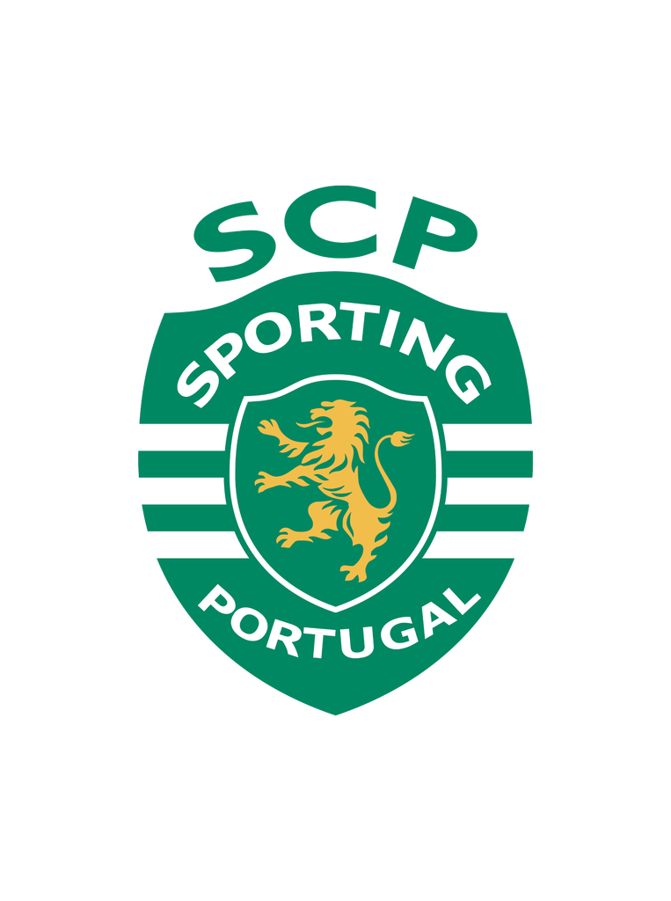
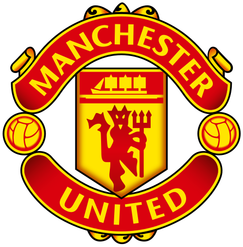

Perfil

Descripción
Atleta profesional, máximo goleador histórico del fútbol. Especialista en liderazgo, disciplina y superación constante de récords.
Contacto
- 📍 Funchal, Madeira, Portugal
- 🎂 5 de Febrero de 1985
- 🌐 @cristiano wiki
Redes Sociales
- 📷 Instagram: @cristiano instagram
- ▶️ YouTube: @cristiano youtube
- 𝕏 Twitter: @cristiano twitter

Trayectoria Profesional

Sporting CP
Temporadas: 2002-2003 Partidos: 31 Goles: 5

Manchester United
Temporadas: 2003-2009 / 2021-2022 Partidos: 346 Goles: 145

Real Madrid
Temporadas: 2009-2018 Partidos: 438 Goles: 450

Juventus FC
Temporadas: 2018-2021 Partidos: 134 Goles: 101

Al-Nassr FC
Temporadas: 2023-Actualidad Partidos: 127 Goles: 111
Palmarés Destacado
- 🏆 5 Balones de Oro
- 🏆 5 UEFA Champions League
- 🏆 1 Eurocopa (2016)
- ⚽ Máximo goleador histórico de la Champions
- ⚽ Máximo goleador de todos los tiempos